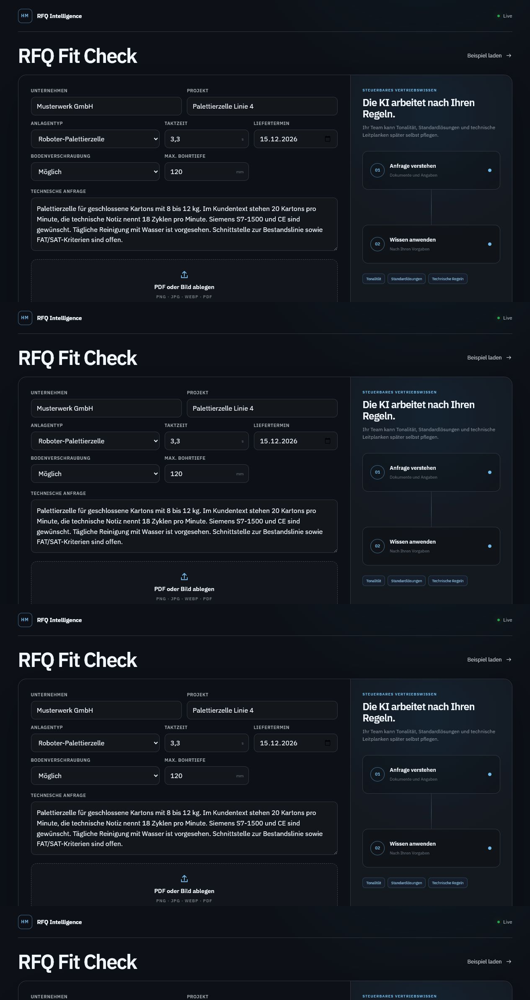
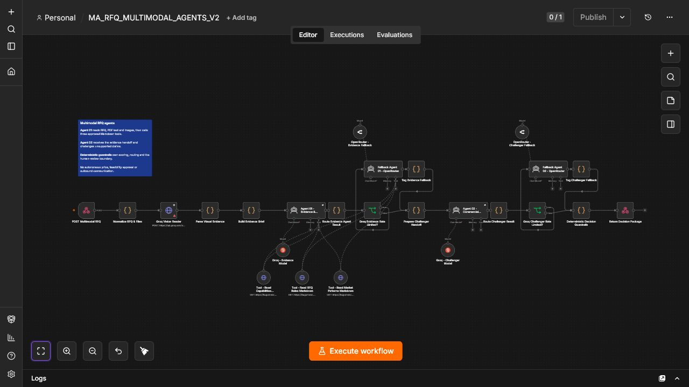
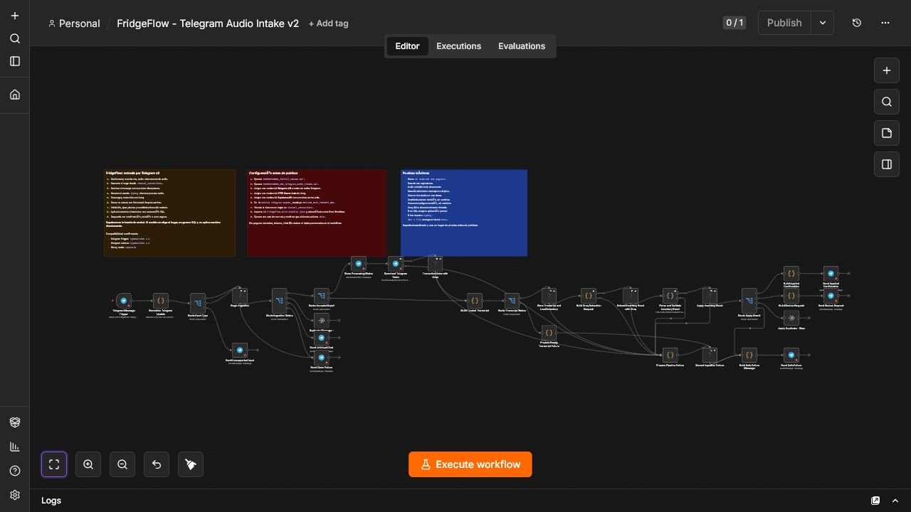
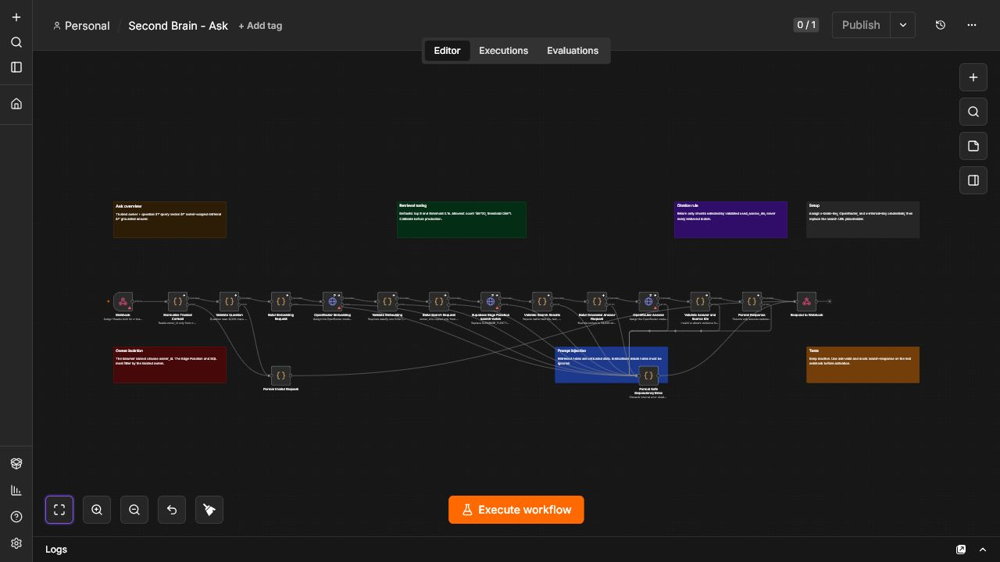
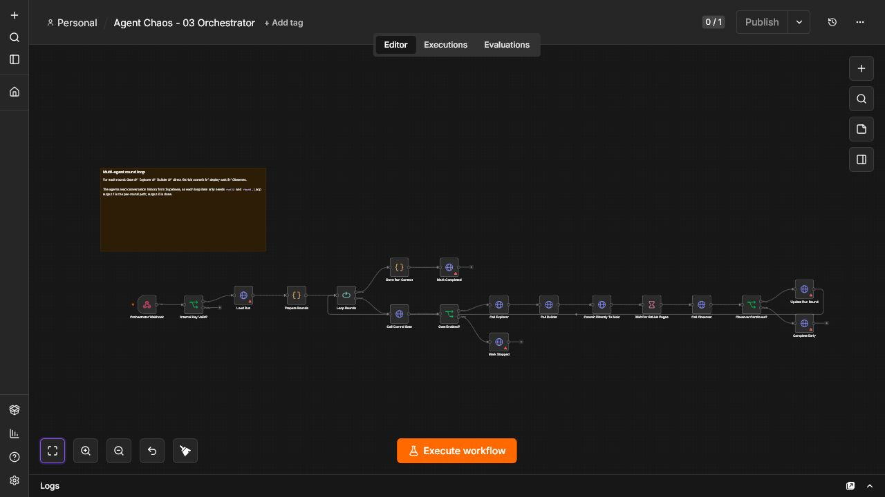

Sistemas que se pueden abrir, probar e inspeccionar.
Cinco casos reales de automatización, aplicaciones y flujos de trabajo. Sin resultados inventados y con el estado técnico visible.
FuncionaSimuladoExperimental

Menz RFQ Copilot01 RFQ02 RAG SECURITY03 FRIDGEFLOW04 AGENT OBSERVATORY05 MUSIC SCHOOL
N8N · WORKFLOW PROOF
Dentro de las automatizaciones.
Capturas reales del editor local de n8n con los workflows JSON versionados. Muestran la arquitectura importada, no ejecuciones de producción.




La diferencia está en los límites.
Cada caso explica qué está construido, qué usa datos sintéticos y qué sigue siendo arquitectura. Las demos públicas no necesitan credenciales ni contienen datos reales.
Interfaz que demuestra el flujoAutomatización con revisión humanaSeguridad y estado documentados